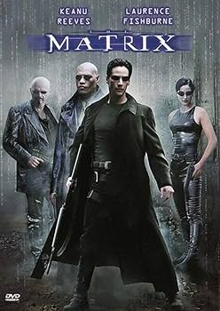
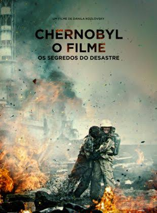
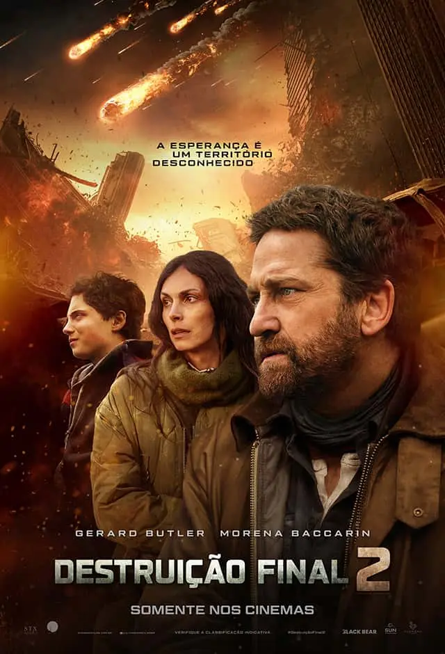

Destaque de Ação
Matrix 1

Gênero: Ação / Ficção Científica
Lançamento: 1999
Assistir trailer
Nota: ⭐⭐⭐⭐⭐⭐⭐⭐⭐⭐ (10/10)
O jovem programador Thomas Anderson é atormentado por estranhos pesadelos em que está sempre conectado por cabos a um imenso sistema de computadores do futuro. À medida que o sonho se repete, ele começa a desconfiar da realidade. Thomas conhece o misterioso Morpheus e Trinity e descobre que é vítima de um sistema inteligente e artificial chamado Matrix, que manipula a mente das pessoas e cria a ilusão de um mundo real enquanto usa os cérebros e corpos dos indivíduos para produzir energia...

Gênero: Ação
Lançamento: 2021
Assistir trailer
Nota: ⭐⭐⭐⭐⭐⭐☆☆☆☆ (06/10)
Após o terrível acidente nuclear na usina de Chernobyl, um bombeiro arrisca sua vida para evitar um desastre ainda maior. Ao lado de um engenheiro e um mergulhador militar,eles partem na perigosa missão de drenar a água de um reator em chamas..

Gênero: Ação
Lançamento: 2020
Assistir trailer
Nota: ⭐⭐⭐⭐⭐⭐⭐⭐☆☆ (08/10)
John Garrity, sua ex-esposa e seu filho embarcam em uma jornada perigosa para encontrar um santuário enquanto um cometa destruidor de planetas avança em direção a Terra.Em meio a relatos aterrorizantes de cidades sendo destruidas, Garrity vê o melhor e o pior da humanidade. À medida que a contagem regressiva para o apocalipse se aproxima de zero, sua incrível jornada culmina em um voo desesperado e de última hora para um possível refúgio seguro..
Gênero: Ação
Lançamento: 2005
Assistir trailer
Nota: ⭐⭐⭐⭐⭐⭐⭐☆☆☆ (07/10)
Ainda em luto pela repentina morte de sua esposa, o ferreiro Balian junta-se ao seu distante pai, Baron Godfrey, nas cruzadas a caminho de Jerusalém. Após uma jornada muito difícil até à cidade santa, o jovem valente entra no séquito do rei leproso Balduíno IV, que deseja lutar contra os muçulmanos para seu próprio ganho político e pessoal...
<